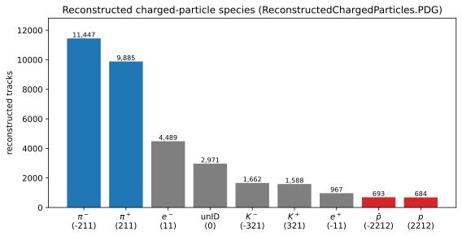

All in One View
Content from Generative AI as an agentic research tool
Last updated on 2026-07-14 | Edit this page
Overview
Questions
- How does an agentic assistant differ from a chat model?
- What are the parts of an LLM “harness”?
- What loops sit around the agent loop, and what does each add?
- How do we get trustworthy results from a stochastic model?
- Why build on an open protocol, not one product?
Objectives
- Trace one pass of the agent loop for a physics task, naming what enters the context at each step.
- Draft acceptance criteria precise enough that a grader — human or agent — can apply them.
- Place a given automation (a format-on-edit hook, a nightly report, a prompt tweak) at the right loop level.
- Choose between a tool, a skill, and a subagent when adding a new capability.
The bottleneck is rarely the physics
In a typical analysis the physics is modest: select a final state, build an observable, fit a signal, etc. Most effort goes into the software around it — locating datasets, decoding a data model, getting branch names and units right, iterating on plotting and analysis code. LLMs compress this overhead well, but only if they produce checkable results. Later episodes apply this to the decay \(\Lambda^0 \to p\,\pi^-\).
Two modes of use
A chat completion is a single forward pass: prompt in, text out, exchange ends. If that text is code, you execute it, inspect the error, and feed it back by hand. The model never observes your data or the result of running anything.
An agentic loop wraps the same model in a control structure that lets it act: the model proposes an action, an external tool carries it out, the result is appended to the context, and the model is invoked again — until a stopping condition is met. In the loop the model is conditioned on the actual state of your files and real computation output, not on its prior alone.
Scope
Here, “generative AI” means an LLM-based coding assistant in this agentic mode — not machine learning for reconstruction or particle identification. The object of study is the analysis-authoring workflow.
That loop is the first of four, each wrapped around the one before it. This episode walks up the stack.
Level 1 — the agent loop
The basic cycle: the model calls a tool, looks at what came back, and decides whether it is done.
%%{init: {'theme':'base', 'themeVariables': {'fontSize':'15px','lineColor':'#94a3b8','edgeLabelBackground':'#e2e8f0','clusterBkg':'#1f293720','clusterBorder':'#94a3b8','titleColor':'#94a3b8'}}}%%
flowchart TD
accTitle: {Level 1 the agent loop}
accDescr: {Level 1 the agent loop}
Q["task"]:::user --> M["model"]:::core
M -->|"tool call"| T["tools<br/>read files · run code · query "]:::tool
T -->|"result appended to context"| D{"task<br/>complete?"}:::core
D -->|"no"| M
D -->|"yes"| R["result + provenance"]:::out
classDef core fill:#e7efff,stroke:#4c6ef5,stroke-width:1.5px,color:#10204a;
classDef tool fill:#e6f7ed,stroke:#2f9e44,stroke-width:1.5px,color:#0b3d1f;
classDef out fill:#f3e8ff,stroke:#7048e8,stroke-width:1.5px,color:#2e1065;
classDef user fill:#f1f3f5,stroke:#868e96,stroke-width:1.5px,color:#212529;A model plus the machinery that runs this cycle is a harness, and it has exactly four parts:
- Model — reasoning and code generation. Interchangeable: provider and model are an implementation choice, not part of the method.
- Context — everything the model attends to in a step: system instructions, files, prior turns, tool outputs. Bounded by the context window (in tokens), so what is included, and when, is deliberate.
- Tools — operations the model may invoke, each with a typed interface (name, arguments, return schema). The only channel through which the model affects the outside world.
- Control loop — the policy that alternates propose → execute → observe until done. This distinguishes an agent from a chatbot.
Why the loop is essential
Feeding tool results back lets the assistant correct course against ground truth: read the actual branch names rather than guessing, run a fit and read back its \(\chi^2/\mathrm{ndf}\), refit if the peak is misplaced. A single completion cannot, because it never observes a consequence of its actions.
Extending the harness: the modern toolkit
Production assistants keep that small core and surround it with standard extension points. The vocabulary recurs in every modern assistant’s documentation.
%%{init: {'theme':'base', 'themeVariables': {'fontSize':'15px','lineColor':'#94a3b8','edgeLabelBackground':'#e2e8f0','clusterBkg':'#1f293720','clusterBorder':'#94a3b8','titleColor':'#94a3b8'}}}%%
flowchart TB
accTitle: {AI agent harness}
accDescr: {AI agent harness}
MCP["MCP servers<br/>external tools & data"]:::tool --> H
SUB["subagents<br/>specialized, isolated context"]:::tool --> H
HOOKS["hooks<br/>lifecycle automation"]:::tool --> H
MON["monitors<br/>watch & react"]:::tool --> H
H(["harness core<br/>model + context + tools + loop"]):::core
classDef core fill:#e7efff,stroke:#4c6ef5,stroke-width:1.5px,color:#10204a;
classDef tool fill:#e6f7ed,stroke:#2f9e44,stroke-width:1.5px,color:#0b3d1f;- MCP servers — the tools layer, standardized. A server (in our case eic-shell) exposes tools, data, and prompts over the Model Context Protocol so one implementation works in any client. This is how we give the assistant physics capabilities (Episode 3).
- Subagents (agents) — a separate assistant instance with its own context window, tools, and instructions, spawned for a sub-task. They isolate context and enable divide-and-conquer.
-
Skills — packaged, versioned procedures (a
SKILL.mdplus scripts) loaded on demand when a request matches (Episode 4). A tool is a capability; a skill is a recipe.
| Component | What it adds to the core loop | In this tutorial |
|---|---|---|
| MCP servers | external tools & data, client-agnostic | Episodes 3 & 5 (the uproot/xrootd servers) |
| Subagents | isolated, specialized helpers | concept |
| Skills | reusable, versioned procedures | Episode 4 (SKILL.md) |
Two smaller helpers matter for the loops later in this episode:
- Hooks — small scripts the harness runs automatically at fixed moments (before or after a tool call, at session end). Simple examples: re-format code after every edit; refuse any command that would delete data; append each tool call to a provenance log.
- Monitors — watchers for work that outlives a single turn: they follow background state and re-invoke the assistant when it changes. Simple examples: watch a long fit or batch job and wake the assistant with the result when it finishes; watch a directory and react when a new file appears.
Level 2 — the verification loop
A level-1 agent stops when it thinks the task is complete — and an LLM is stochastic: identical prompts can yield different outputs, and a confident answer is not evidence of a correct one. The fix is a second loop around the first: a grader checks the agent’s result against explicit acceptance criteria before it is accepted, and a failure goes back in as feedback for another attempt.
%%{init: {'theme':'base', 'themeVariables': {'fontSize':'15px','lineColor':'#94a3b8','edgeLabelBackground':'#e2e8f0','clusterBkg':'#1f293720','clusterBorder':'#94a3b8','titleColor':'#94a3b8'}}}%%
flowchart TD
accTitle: {Level 2 the verification loop}
accDescr: {Level 2 the verification loop}
A["agent loop ①"]:::core -->|"draft result"| G["grader<br/>explicit success criteria"]:::tool
G --> P{"pass?"}:::core
P -->|"no — feedback into context"| A
P -->|"yes"| R["accepted result"]:::out
classDef core fill:#e7efff,stroke:#4c6ef5,stroke-width:1.5px,color:#10204a;
classDef tool fill:#e6f7ed,stroke:#2f9e44,stroke-width:1.5px,color:#0b3d1f;
classDef out fill:#f3e8ff,stroke:#7048e8,stroke-width:1.5px,color:#2e1065;Treat every model output as a hypothesis, accepted only after checking it against something external — the data, a fit statistic, a known physical value, or an independent implementation. For the \(\Lambda^0\) measurement the criteria are physical and checkable: \(|\mu - 1.115683\,\mathrm{GeV}| < 5\,\mathrm{MeV}\), \(\sigma\) consistent with detector resolution, \(\chi^2/\mathrm{ndf}\) of order 1. In Episode 4 you will write exactly this grader into the lambda-fit skill’s success criteria — and a passing agent reports the numbers, while a failing one must report the failure, not a result.
Grading costs time and tokens. It is the right trade wherever correctness matters more than speed — almost always. So favor tools that return compact, inspectable quantities — counts, edges, fit parameters — and keep a record of what was run: reproducibility and provenance are the criteria by which an automated result earns trust. At collaboration scale the grader can be mechanical, like the secret-token fabrication check in DISpatcher Episode 6.
Level 3 — the operation loop
With verification in place, the agent no longer needs you to press enter. A third loop makes it a component: an event — a schedule, a finished production job, a new pull request — triggers the agent, its verified output updates something (a report, a documentation page, an alert), and the system goes back to waiting.
%%{init: {'theme':'base', 'themeVariables': {'fontSize':'15px','lineColor':'#94a3b8','edgeLabelBackground':'#e2e8f0','clusterBkg':'#1f293720','clusterBorder':'#94a3b8','titleColor':'#94a3b8'}}}%%
flowchart LR
accTitle: {Level 3 the operation loop}
accDescr: {Level 3 the operation loop}
E["event<br/>schedule · finished job · new PR"]:::pkg --> A["agent + verification<br/>① + ②"]:::core
A --> U["system update<br/>report · doc page · alert"]:::out
U -.->|"wait for the next event"| E
classDef core fill:#e7efff,stroke:#4c6ef5,stroke-width:1.5px,color:#10204a;
classDef out fill:#f3e8ff,stroke:#7048e8,stroke-width:1.5px,color:#2e1065;
classDef pkg fill:#fff4e0,stroke:#f08c00,stroke-width:1.5px,color:#5c3b00;Hooks and monitors (above) are the entry-level version of this. The collaboration-scale version is in Episode 6: documentation regenerated on schedule against the current code base, and pull-request reviews triggered per PR.
Level 4 — the improvement loop, in a word
There is one more loop, around everything: periodically look at what
the agent actually did — transcripts, failed fits, wrong tool
choices — and feed that back into the harness itself:
sharpen AGENTS.md, tighten a skill’s success criteria, add
the missing tool. Levels 1–3 make the agent do the work; level 4 makes
the agent better at the work, which is where the gains
compound. You will practice a small version of it every time a prompt in
this lesson goes wrong and you fix the instructions instead of retyping
the request.
Where a human belongs in each loop
Autonomy does not mean absence of judgement — each level has a natural checkpoint: approving a sensitive tool call (1), signing off a graded result (2), reviewing what runs unattended (3), and deciding which harness changes to keep (4). Put yourself at the checkpoints.
One interface, many assistants
The Model Context Protocol (MCP) is an open standard for exposing tools to language-model clients. A tool implemented once against MCP works in any compliant assistant — like a hardware bus that decouples peripherals from hosts. In Episode 3 you connect the eic-shell servers and see that any MCP-compliant client connects the same way, making the workflow reproducible across environments.
The next episode states the physics measurement; you install an assistant on the Setup page.
- A conversational model returns text; an agentic harness executes tools and conditions on their output.
- Level 1, the agent loop, runs in a harness with four parts: the model, the context window, a set of typed tools, and a control loop — extended by MCP tools, subagents, skills, hooks, and monitors.
- Level 2 wraps the agent in a verification loop: a grader checks each result against explicit success criteria, because stochastic output must be treated as a hypothesis, not an answer.
- Level 3 runs the verified agent on events and schedules; level 4 feeds what actually happened back into the harness, where gains compound.
- Building on the open Model Context Protocol keeps tools portable across assistants and supports reproducibility.
The four-level loop schematics are adapted from The Art of Loop Engineering.
Content from The measurement: Λ⁰ → p π⁻
Last updated on 2026-07-14 | Edit this page
Overview
Questions
- What is the p π⁻ invariant-mass observable, and its peak and background?
- Which EDM4eic collections and units does it need?
Objectives
- Compute m(p, π) by hand from the four momentum branches and the PDG masses.
- Sketch the expected spectrum — peak position, width scale, background shape — before touching data.
You install an assistant and the tool servers on the Setup page. This episode is the physics you will reconstruct in Episode 3.
The decay
The Λ⁰ is the lightest strange baryon (uds, spin-parity ½⁺). It decays only weakly (a strangeness-changing ΔS = 1 transition), so it is long-lived: cτ ≈ 7.9 cm. Its dominant hadronic mode is
Λ⁰ → p + π⁻ (branching fraction ≈ 63.9%)The centimeter-scale flight distance makes the decay a V0: two oppositely charged tracks from a vertex displaced from the primary interaction point.
%%{init: {'theme':'base', 'themeVariables': {'fontSize':'15px','lineColor':'#94a3b8','edgeLabelBackground':'#e2e8f0','clusterBkg':'#1f293720','clusterBorder':'#94a3b8','titleColor':'#94a3b8'}}}%%
flowchart LR
accTitle: {Lambda to proton pion V0 decay}
accDescr: {Lambda to proton pion V0 decay}
PV["primary vertex<br/>e + A collision"]:::vtx -. "Λ⁰: neutral, cτ ≈ 7.9 cm" .-> DV["displaced<br/>decay vertex"]:::vtx
DV --> P["proton<br/>PDG 2212"]:::pos
DV --> PI["pion<br/>PDG -211"]:::neg
classDef vtx fill:#e7efff,stroke:#4c6ef5,stroke-width:1.5px,color:#10204a;
classDef pos fill:#ffe3e3,stroke:#e03131,stroke-width:1.5px,color:#5c0a0a;
classDef neg fill:#e7f5ff,stroke:#1971c2,stroke-width:1.5px,color:#0a3d62;The observable
The Λ⁰ is neutral and not detected directly; we reconstruct it from its charged daughters. For a candidate proton \(p_1 = (E_1, \vec{p}_1)\) and candidate pion \(p_2 = (E_2, \vec{p}_2)\), the pair’s invariant mass is Lorentz invariant:
\[E_i = \sqrt{|\vec{p}_i|^2 + m_i^2}\]
with \(m_i\) the assigned proton or pion mass, and
\[m(p, \pi) = \sqrt{(E_1 + E_2)^2 - |\vec{p}_1 + \vec{p}_2|^2}\]
Assign the proton mass to one track and the pion mass to the other (using reconstructed particle ID). For true Λ⁰ decays this equals the parent mass; candidates accumulate in a peak at 1.115683 GeV.
Width: resolution, not lifetime
The Λ⁰ natural width (\(\Gamma = \hbar/\tau \approx 2.5 \times 10^{-6}\) eV) is far below any detector effect. The observed peak width — a few MeV — measures detector momentum and angular resolution, not the particle.
Background
Most proton–pion pairs do not come from a Λ⁰ at all. These random (“combinatorial”) pairs do not peak; they form a smooth distribution under the signal. The analysis extracts a yield by fitting a Gaussian peak on a low-order polynomial background (Episode 5). The charge-conjugate mode Λ̄ → p̄ π⁺ is reconstructed identically with the antiparticles.
Reference values (PDG)
| Quantity | Value |
|---|---|
| m(Λ⁰) | 1.115683 GeV |
| m(p) | 0.9382720813 GeV |
| m(π±) | 0.13957061 GeV |
| cτ(Λ⁰) | 7.89 cm |
| BR(Λ⁰ → p π⁻) | 63.9 % |
Energies and momenta are in GeV (natural units, c = 1).
The data model
ePIC reconstruction output uses EDM4eic, an EIC
extension of EDM4hep generated with PODIO.
A file contains an events tree; each entry is one event,
each branch a collection. We need one collection, the
reconstructed charged tracks, and four members:
events (tree; one entry per event)
ReconstructedChargedParticles.PDG reconstructed particle-ID hypothesis
ReconstructedChargedParticles.momentum.x p_x [GeV]
ReconstructedChargedParticles.momentum.y p_y [GeV]
ReconstructedChargedParticles.momentum.z p_z [GeV]PDG is the Particle Data Group code the reconstruction
assigns each track. Select protons (2212) and π⁻
(-211) for Λ⁰, antiprotons (-2212) and π⁺
(211) for Λ̄.
Caveat: PID is a hypothesis too
The PDG field is the reconstruction’s best guess, not
truth. Misidentification feeds the combinatorial background — one reason
a fit, not a count, is required.
You do not download a file. In Episode
3 the assistant uses the rucio
tools to find a DIS dataset and xrootd
to verify its files, then reads one of the dataset’s
root:// URLs
(e.g. root://epicxrd1.sdcc.bnl.gov:1095//...) in
place with the uproot
tools — pulling exactly these branches without writing any I/O code.
- The observable is the p π⁻ invariant mass; the Λ⁰ appears as a narrow peak over a combinatorial background.
- The peak width is set by detector resolution, not the negligible Λ⁰ natural width.
- The data are EDM4eic collections in an
eventstree; momenta are in GeV.
Content from Tool servers and the Model Context Protocol (MCP)
Last updated on 2026-07-16 | Edit this page
Overview
Questions
- What is MCP, and what problem does it solve?
- What does the uproot server expose, and how is it sandboxed?
- How do you connect and drive a server?
Objectives
- Bring the servers up, check them, and read a log when one misbehaves
(
eic-mcp up/status/logs). - Generate the connection file for your own client with
eic-mcp config. - Discover a real DIS dataset by prompting, without hard-coding names or paths.
- Judge which returned quantities are worth verifying, and against what.
The interoperability problem
Tools are the only way an assistant can act (Episode 1). The Model Context Protocol (MCP) standardizes the interface: implement a tool once as a server, and any MCP-compliant client (the assistant) can use it.
MCP is a client–server protocol over JSON-RPC 2.0. A
server offers three object types — tools (callable
functions), resources (readable data), and
prompts (templated instructions). There are two
transports: stdio (the client launches the server as a
subprocess and talks to it over standard input/output) and
streamable HTTP for servers reached over the network.
The lesson’s servers run inside eic-shell and speak streamable HTTP on
127.0.0.1.
%%{init: {'theme':'base', 'themeVariables': {'fontSize':'15px','lineColor':'#94a3b8','edgeLabelBackground':'#e2e8f0','clusterBkg':'#1f293720','clusterBorder':'#94a3b8','titleColor':'#94a3b8'}}}%%
flowchart LR
accTitle: {EIC MCP data tools}
accDescr: {EIC MCP data tools}
A["AI assistant<br/>opencode · Copilot · Cursor"]:::core <-->|"JSON-RPC / HTTP"| S["uproot tool server<br/>(MCP, in eic-shell)"]:::tool
S <-->|"uproot"| F["EDM4eic ROOT file"]:::data
classDef core fill:#e7efff,stroke:#4c6ef5,stroke-width:1.5px,color:#10204a;
classDef tool fill:#e6f7ed,stroke:#2f9e44,stroke-width:1.5px,color:#0b3d1f;
classDef data fill:#fff4e0,stroke:#f08c00,stroke-width:1.5px,color:#5c3b00;Why run the servers inside eic-shell
The servers reuse the container’s own uproot,
xrdfs, and rucio, so dependencies are pinned
and one environment runs both analysis and tools.
eic-mcp up starts them as background HTTP services;
eic-mcp down stops them. They hold no state between
sessions.
The uproot tool server
The ePIC uproot
tool server reads ROOT/EDM4eic files with uproot and returns JSON
summaries — edges, counts, statistics, fit inputs — not raw
arrays. One caveat: get_file_structure on an EDM4eic file
lists all ~6,000 branches (megabytes of JSON); for schema questions
get_tree_info is the compact choice. It exposes 15 tools in
four groups:
| Group | Representative tools | Purpose |
|---|---|---|
| Inspection |
get_file_structure, get_tree_info,
get_branch_statistics,
validate_dataset_schema
|
enumerate trees, branches, types, and summary statistics |
| Single-file compute |
histogram_branch, execute_kernel
|
histogram a branch; run sandboxed NumPy/awkward over branches |
| Dataset (multi-file) |
get_dataset_file_list, histogram_dataset,
get_dataset_statistics,
execute_kernel_dataset,
estimate_dataset_cost
|
enumerate matching files, then accumulate operations across them |
| Asynchronous jobs |
submit_kernel_dataset, get_job_status,
get_job_result, cancel_job
|
dispatch long dataset jobs and poll them |
The execution sandbox
execute_kernel runs client-supplied Python in a
restricted environment: no import, no file or network I/O,
only np (NumPy) and ak (awkward) in scope.
Limits are enforced at compile time, and the code runs in a subprocess
with a 30-second wall-clock limit.
Start the servers
Start the servers from inside eic-shell (the first run bootstraps them automatically — see Setup):
This launches the uproot, xrootd, and rucio servers as MCP-over-HTTP
endpoints on 127.0.0.1, ports 9101,
9102, 9103. Stop them with
eic-mcp down; eic-mcp status shows what is
listening, and eic-mcp logs xrootd tails a server’s log
when something misbehaves. The assistant connects to those URLs.
If rucio answers but xrootd/uproot time out
The rucio catalog and the data store are different services. If
dataset queries work but every file access hangs, the XRootD store may
be temporarily down — check with
xrdfs root://epicxrd1.sdcc.bnl.gov:1095 ls /eic/EPIC/RECO
(inside eic-shell) and retry later. Your setup is fine; the store isn’t
answering.
Current campaigns (25.12.0 onward) are served from BNL disk, which is
what eic-mcp points the xrootd server at by default. Older
campaigns (up to 25.10.x) live on the JLab store instead — browse those
with
XROOTD_SERVER=root://dtn-eic.jlab.org XROOTD_BASE_DIR=/volatile/eic/EPIC eic-mcp restart
(a plain up skips servers that are already running, so the
new setting would never take effect). Either way, rucio
replicas always tell you where a file really is.
If instead every uproot call starts timing out after one big
one, the server is busy, not broken: it handles one
request at a time, and a call your client gave up on is still running.
Wait a minute, or clear it with
EIC_MCP_SERVERS=uproot eic-mcp restart. Do not let the
assistant “work around” it by installing packages or reading the file
itself — AGENTS.md (Episode 4) forbids exactly that.
Connect the assistant
opencode reads its server list from a JSON config. In the directory where you will launch opencode, one command writes it:
The file it writes, opencode.jsonc, is just the three
server URLs — print it with eic-mcp config opencode -
(committed as the example files/mcp-config/opencode.jsonc):
JSON
{
"$schema": "https://opencode.ai/config.json",
"mcp": {
"uproot": { "type": "remote", "url": "http://127.0.0.1:9101/mcp", "enabled": true },
"xrootd": { "type": "remote", "url": "http://127.0.0.1:9102/mcp", "enabled": true },
"rucio": { "type": "remote", "url": "http://127.0.0.1:9103/mcp", "enabled": true }
}
}Within a session, /mcp lists the connected servers and
their tools.
Which side am I on?
Only the servers need eic-shell — they use the
container’s uproot, xrdfs, and signed-in
rucio. The client just talks to
http://127.0.0.1:910x/mcp, so run it where you normally
work, and put its config in the directory you launch it from.
- Linux and Windows/WSL: the same URLs work inside and outside the container.
-
macOS: you published the ports in Setup; on the Mac itself, copy
files/mcp-config/opencode.jsoncrather than runningeic-mcp config(it needs the container). -
Can’t install a client? eic-shell ships
claudeandcopilot— run one inside it.
Finding the data with MCP
You never download a dataset. The other two MCP servers let the
assistant find and verify the real files — replacing the manual
rucio + xrdfs recipe — and
uproot-mcp then reads them straight from the store.
%%{init: {'theme':'base', 'themeVariables': {'fontSize':'15px','lineColor':'#94a3b8','edgeLabelBackground':'#e2e8f0','clusterBkg':'#1f293720','clusterBorder':'#94a3b8','titleColor':'#94a3b8'}}}%%
flowchart LR
accTitle: {EIC MCP data tools}
accDescr: {EIC MCP data tools}
R["rucio-mcp<br/>list_dids · list_files · list_file_replicas"]:::tool -->|"DID + root:// replica URLs"| X["xrootd-mcp<br/>list_datasets · check_file_exists · get_dataset_event_statistics"]:::tool
X -->|"verified root:// paths"| U["uproot-mcp<br/>analyze in place"]:::core
classDef tool fill:#e6f7ed,stroke:#2f9e44,stroke-width:1.5px,color:#0b3d1f;
classDef core fill:#e7efff,stroke:#4c6ef5,stroke-width:1.5px,color:#10204a;-
rucio-mcpqueries the data-management catalog:list_didsfinds the dataset identifier (DID) by name,get_did_metadataandlist_filesdescribe its contents,list_file_replicasreturns the physicalroot://locations. -
xrootd-mcpworks directly on the store:list_campaigns/list_datasetsbrowse it,list_directoryandcheck_file_existsenumerate and verify files, andget_dataset_event_statisticsreports total events across a dataset.
rucio tells you what the dataset is and where its
replicas live, xrootd confirms the files are there, and
uproot-mcp reads a root:// URL in
place.
rucio works automatically — no key
Inside eic-shell, rucio-mcp signs in to the
authenticated catalog with the shared, read-only eicread
account. No password or grid proxy. The xrootd path is public, so to
only browse the store you can use xrootd-mcp
alone.
List the available campaigns
ePIC data is organized by production campaign — a
version such as 26.06.0 — together with the beam/target and
physics, all encoded in the rucio DID
(e.g. epic:/RECO/26.06.0/epic_craterlake/DIS/pythia8.316-1.0/NC/noRad/ep/18x275/...).
Before locating a specific dataset, check which campaigns exist so you
use a current one:
Using the rucio tools, find which production campaigns are available (the version field in the DIDs, e.g. 26.06.0) and show the most recent few.The assistant calls list_dids
on scope epic and groups the DIDs by their campaign
component. Watch how it does this: the catalog holds thousands of DIDs
and the pages are not sorted newest-first, so sampling one page can miss
the current campaigns entirely. Narrowing with a version wildcard
(/RECO/26.*) — or one call to the xrootd
server’s list_campaigns — gives the honest answer.
Exercise: locate a dataset (≈ 10 min)
With rucio and xrootd connected (no
credentials — see the callout), ask your assistant:
Use the rucio tools to find the ePIC reconstructed-DIS dataset for the BeAGLE eCu ep 10x115 GeV sample in campaign 26.04.1, list its files, then use the xrootd tools to confirm those files exist on the store and report the total number of events.The assistant calls list_scopes/list_dids
(scope epic, narrowing by a name glob on the campaign and
beam/target) to find the DID, list_files to enumerate it
(374 files), and list_file_replicas for the
root:// URLs. It then switches to xrootd-mcp
(list_directory_filtered, check_file_exists)
to verify the files. For the event total: rucio does not store event
counts, and scanning all 374 files would take an hour — so a sensible
assistant checks a few files (≈ 1,220 events each) and extrapolates. The
DID is discovered with list_dids, not hard-coded —
what you want when campaign names change.
Inspect the dataset
You say what you want in plain language and the assistant makes the
matching tool calls. Take one of the root:// URLs from the
previous exercise — written below as
root://epicxrd1.sdcc.bnl.gov:1095//… — and analyze it
in place.
Exercise: enumerate the schema (≈ 10 min)
Issue the request:
Using the uproot tools, report the structure of the events tree in root://epicxrd1.sdcc.bnl.gov:1095//<your-discovered-file>.root and list the members of the ReconstructedChargedParticles collection.The assistant calls get_tree_info on the
events tree (not the full get_file_structure
dump, which runs to megabytes on an EDM4eic file) and reports something
like:
OUTPUT
File: root://epicxrd1.sdcc.bnl.gov:1095//…/<dataset-file>.root
Tree: events — branches grouped by collection
ReconstructedChargedParticles collection:
ReconstructedChargedParticles.PDG int32[] PDG particle-ID code
ReconstructedChargedParticles.momentum.x float[] p_x [GeV]
ReconstructedChargedParticles.momentum.y float[] p_y [GeV]
ReconstructedChargedParticles.momentum.z float[] p_z [GeV]
… energy, charge, mass, type, referencePoint.*, covMatrix.*The names are read from the file, not inferred — eliminating the schema-hallucination failure mode from Episode 1. These are the branches you’re looking for.
Exercise: identify the species present (≈ 10 min)
Issue the request:
Histogram ReconstructedChargedParticles.PDG with one bin per integer code, so I can see the reconstructed particle species in the file.The assistant calls histogram_branch, setting the bins
and range so each integer code gets its own bin (the default
auto-binning would merge neighbouring codes, e.g. 0 and 11). The
distribution is discrete — spikes at the PDG codes present. Counting
over a reconstructed-DIS file gives, for example:
OUTPUT
PDG species count
-211 pi- 11447
211 pi+ 9885
11 e- 4489
0 unID 2971 <- tracks with no PID hypothesis
-321 K- 1662
321 K+ 1588
-11 e+ 967
-2212 pbar 693
2212 p 684 <- protons are rare
Pions dominate; protons are rare (≈ 2%), so the Λ⁰ signal will be small. A sizeable fraction of tracks carry no PID (code 0) or a wrong one — misidentification that feeds the combinatorial background and is why we fit the peak rather than count it.
Verify the returned quantities
Inspect the returned numbers — bin edges, counts, statistics: do the PDG peaks fall at physical codes, and are the proton and pion yields plausible? Episode 4 turns this into explicit success criteria.
One data model, several access paths
ePIC data follow the PODIO model (EDM4eic): an
events tree whose branches are per-event collections such
as ReconstructedChargedParticles and
MCParticles. We read it with uproot
because that needs only eic-shell — no compiled framework. uproot is one
of several equivalent access paths.
Equivalent implementations
The same Λ⁰ peak comes out of:
- ROOT RDataFrame — declarative, columnar, parallel;
- ROOT TTreeReader — an explicit event loop;
- bare uproot — Python with no tool server; and
- the PODIO Frame API — the native interface.
Worked implementations of each are in Alternative analysis approaches.
The assistant can now query the data through a verifiable interface. The next episode captures this procedure as a reusable, versioned skill.
- MCP is a JSON-RPC client–server protocol; a server exposes tools, resources, and prompts to any compliant client.
- The uproot server returns compact, JSON-serializable summaries rather than raw arrays, which keeps results inspectable.
-
execute_kernelruns client-supplied Python in a restricted sandbox: no imports or I/O, only NumPy/awkward, with a timeout. - The servers run inside eic-shell (
eic-mcp up) and speak streamable HTTP; opencode and other clients connect to the same127.0.0.1URLs (eic-mcp config <client>). - PODIO/uproot is one access path; RDataFrame, TTreeReader, and bare uproot give the same result (see the extras).
Content from Persisting instructions: AGENTS.md and SKILL.md
Last updated on 2026-07-16 | Edit this page
Overview
Questions
- How do you give an assistant durable project context?
- AGENTS.md vs SKILL.md — when to use each?
- How do you make every tool read the same rules?
- What’s in a usable SKILL.md for the Λ⁰ fit?
Objectives
- Write an AGENTS.md for always-on project context.
- Bridge it so one AGENTS.md drives any tool.
- Write a SKILL.md that runs the Λ⁰ fit on demand.
- Encode success criteria + provenance for auditable output.
Two ways to make instructions persistent
Typing requests (Episode 3) does not scale: you re-explain the data model, conventions, and procedure every session, and nothing keeps two runs the same. Two file-based mechanisms fix this.
-
AGENTS.md— always-on context, read at the start of every session: environment, data model, conventions, and what “done” means. -
SKILL.md— an on-demand procedure in a named skill directory, loaded only when a request matches its description. It encodes one repeatable workflow.
%%{init: {'theme':'base', 'themeVariables': {'fontSize':'15px','lineColor':'#94a3b8','edgeLabelBackground':'#e2e8f0','clusterBkg':'#1f293720','clusterBorder':'#94a3b8','titleColor':'#94a3b8'}}}%%
flowchart TD
accTitle: {Skills and AGENTS.md}
accDescr: {Skills and AGENTS.md}
R["your project"] --> AG["AGENTS.md<br/>whole file always in context"]:::always
R --> SK[".opencode/skills/lambda-fit/SKILL.md<br/>only its description is indexed"]:::ondemand
AG --> M(["model context"]):::core
SK -. "body loaded only when a<br/>request matches its description" .-> M
classDef always fill:#e6f7ed,stroke:#2f9e44,stroke-width:1.5px,color:#0b3d1f;
classDef ondemand fill:#fff4e0,stroke:#f08c00,stroke-width:1.5px,color:#5c3b00;
classDef core fill:#e7efff,stroke:#4c6ef5,stroke-width:1.5px,color:#10204a;AGENTS.md answers “what is this project and how do we
work here?”; a SKILL.md answers “how do I carry out
this task?”.
AGENTS.md — project context
AGENTS.md is plain Markdown at your project root
(subdirectories may override it for files beneath them). opencode,
Codex, Gemini CLI, Zed, and others read it automatically; a tool that
looks for a different filename reads the same content through a one-line
bridge (next section).
It is loaded on every turn, so keep it short and factual:
MARKDOWN
# AGENTS.md — Lambda analysis project
## What this project does
Reconstruct Lambda0 -> p pi- in ePIC EDM4eic data and fit the invariant-mass
peak near 1.115683 GeV.
## Environment
- Everything runs inside eic-shell; the MCP servers are started with `eic-mcp up`.
- Data lives on the grid: find a DIS dataset with the `rucio` tools and read its
root:// files in place with `uproot` — no download.
## Tools
- Use the `rucio` MCP server (list_dids, list_files, list_file_replicas) to locate
a dataset and resolve its root:// URLs.
- Use the `xrootd` MCP server (check_file_exists, get_file_info) to verify a file.
- Use the `uproot` MCP server (get_tree_info, histogram_branch, execute_kernel,
execute_kernel_dataset) for all ROOT file access. Prefer get_tree_info over
get_file_structure: on an EDM4eic file the latter returns megabytes.
- Do NOT write bespoke file I/O; the servers already handle it.
## When a tool fails
- Never install software (no `pip install`, above all not `--break-system-packages`)
and never re-implement the analysis with local uproot/ROOT.
- A timed-out call means the server is BUSY, not broken: it is single-threaded and
still working on the previous request. Wait, retry once, and if it still fails,
stop and report which tool failed with which arguments.
- Never reuse a cached earlier tool result as if it were fresh. A number that did
not come from the MCP servers is not reproducible, so it is not an answer.
## Data model
- Tree: events. Collection: ReconstructedChargedParticles.
- Members: .PDG, .momentum.x, .momentum.y, .momentum.z (momenta in GeV).
- PDG codes: proton 2212, pi- -211, antiproton -2212, pi+ 211.
## Physics constants (PDG)
- m(proton) = 0.9382720813 GeV, m(pi) = 0.13957061 GeV, m(Lambda) = 1.115683 GeV.
## Conventions
- Invariant mass over [1.05, 1.25] GeV, 200 bins.
- Fit a Gaussian + 2nd-order polynomial over [1.08, 1.16] GeV.
- Write results as JSON; save plots under output/.
## Definition of done
- Fitted peak within a few MeV of 1.115683 GeV and chi2/ndf of order 1.
- Always run the fit and check these before reporting a result.This encodes the schema, the tool policy (use the server, not hand-written I/O), the conventions, and an explicit definition of done.
Two rules for a useful AGENTS.md
- Keep it short. It is loaded on every turn, so length costs tokens and dilutes attention. Write only what the model cannot infer from the code.
-
Describe concepts, not file paths. “The
reconstructed tracks are in the
ReconstructedChargedParticlescollection” ages well; a path likesrc/old/lambda_v2.pydoes not — paths move, and the model then searches confidently in the wrong place.
One source of truth: bridge files
Not every tool reads AGENTS.md. Most modern ones do —
opencode, Codex, Gemini CLI, Zed — but some look for their own filename
and silently ignore it: GitHub Copilot reads
copilot-instructions.md, Cursor reads
.cursorrules. A project with only an AGENTS.md
runs such a tool with no context and no warning.
Don’t copy your rules into a second file; two copies drift within a
week. Keep the standard in the center and let each tool read
from it: the tool-specific file becomes a one-line
bridge pointing at AGENTS.md.
.github/copilot-instructions.md (GitHub Copilot) — and
.cursorrules (Cursor) — are one line:
Now every assistant reads the same source of truth. Copy the
ready-made bridge: copilot-instructions.md.
SKILL.md — a named procedure
A skill is a directory containing a
SKILL.md that describes a repeatable procedure:
The procedure runs by driving the MCP tools (build the histogram with the uproot kernel, fit the Gaussian + polynomial in the same sandbox), so it needs no bundled scripts.
The YAML frontmatter carries a name and a
description. The description is the part that
matters: the client matches your request against it to decide whether to
load the skill. Only the name and description stay in
context — the body is read in only when the
description matches.
MARKDOWN
---
name: lambda-fit
description: >
Reconstruct and fit the Lambda0 -> p pi- invariant-mass peak in ePIC EDM4eic
data. Use when asked to measure the Lambda yield, mass, or width, or to
reproduce the Lambda peak from a .root file or a file list.
---
# Lambda invariant-mass fit
## When to use
Any request to find, fit, or quantify the Lambda0 (or its antiparticle) in ePIC
reconstructed data via the proton-pion invariant mass.
## Inputs
- file: one EDM4eic .root URL (a root:// file from a DIS dataset), or
- file_list: the dataset's root:// files for the full sample
(resolve both with the rucio tools: list_dids, list_files, list_file_replicas).
## Steps
1. Confirm the uproot MCP server is connected: get_tree_info on the input.
2. Build the proton-pion invariant-mass histogram with execute_kernel (one file)
or execute_kernel_dataset (many files), tree_name 'events' and the
ReconstructedChargedParticles momentum/PDG branches. For a large sample, cap
the file count first; for more than ~10 files use submit_kernel_dataset and
poll, in batches of ~20 files per job (one big job can hit an upstream idle
timeout), so no single tool call outlives the client's timeout. Write any
reduce/merge code as plain NumPy array operations (the sandbox rejects tuple
unpacking in loops).
3. Fit the histogram with a second execute_kernel call (Gaussian + 2nd-order
polynomial over [1.08, 1.16] GeV; NumPy/awkward only, no imports).
4. Report mu, sigma, signal yield S, and chi2/ndf.
## Success criteria (check before reporting success)
- At least ~50 entries in the fit window. With fewer, report insufficient
statistics and stop — a low-stats fit lets the polynomial absorb the peak and
can pass the checks below by accident.
- |mu - 1.115683 GeV| < 0.005 GeV.
- sigma in ~[0.001, 0.005] GeV (this is detector resolution, not natural width).
- chi2/ndf of order 1.
If any check fails, report the failure and the fit diagnostics, not a result.
## Provenance
List the tool calls and their parameters, and the dataset used (campaign and
file list), so the run can be reproduced.How clients load a skill
opencode reads skills from
.opencode/skills/<name>/SKILL.md in the project
directory (or ~/.config/opencode/skills/ for all projects);
Claude Code uses .claude/skills/. A soft link to the
tutorial’s copy keeps it current:
BASH
mkdir -p .opencode/skills
ln -s ~/tutorial-mcp/files/skills/lambda-fit .opencode/skills/lambda-fit(~/tutorial-mcp is where Setup
cloned this lesson’s repository.)
Loading is the model’s decision, based on the skill’s
description. A small model may answer without loading it,
so every prompt in this lesson names the skill: “Using the lambda-fit
skill”. Clients without a skill mechanism can reference the procedure
from AGENTS.md instead.
Get both example files in place: files/skills/AGENTS.md
(copy it to your analysis directory) and files/skills/lambda-fit/SKILL.md
(link it as above).
When to use which
| Question | Mechanism |
|---|---|
| “What is this project, and how do we work here?” |
AGENTS.md (always loaded) |
| “How do I perform this specific task?” | a SKILL.md (loaded on demand) |
| “What must every result satisfy?” | success criteria — in both, but enforced by the skill |
AGENTS.md sets standing context; the skill executes a
procedure within it.
Why this is efficient: context economy
The context window is finite, and everything in it costs tokens on every turn.
-
AGENTS.mdis loaded in full, every turn. Keep it short and high-signal — every line is paid for on every request. -
A skill loads progressively. Only its
nameand one-linedescriptionstay in context; the body is read only when a request matches. You can install dozens of detailed skills, and none occupies the window until needed.
Put small, always-relevant facts in AGENTS.md; put
detailed, occasional procedures in skills.
Why the success criteria matter
Explicit acceptance tests in the skill — peak position, width, \(\chi^2/\text{ndf}\) — turn “the assistant said it worked” into “the result passed stated, checkable conditions.” Recording the tool calls and dataset makes the run reproducible and auditable.
Your project layout
A project that behaves the same under any assistant:
BASH
lambda-analysis/
├── AGENTS.md # source of truth: context + conventions (write this)
├── .github/
│ └── copilot-instructions.md # points to AGENTS.md (bridge for Copilot)
├── .cursorrules # points to AGENTS.md (bridge for Cursor)
├── opencode.jsonc # MCP server connections — `eic-mcp config opencode` (Episode 3)
└── .opencode/
└── skills/
└── lambda-fit/ # soft link to the tutorial's copy (see callout above;
└── SKILL.md # `.claude/skills/` for Claude Code)The golden rule
Write each instruction once, in the shared open format —
AGENTS.md for context, SKILL.md for
procedures, opencode.jsonc for tool connections — then
point any tool-specific file at it. Never keep duplicate rule files.
Standards in the center, tools at the edges.
Exercise: a summary skill (≈ 10 min)
Write a minimal SKILL.md for “summarize the contents of
any EDM4eic file”, place it where your client loads skills, and try it
on a file from Episode 3.
MARKDOWN
---
name: edm4eic-summary
description: >
Summarize the contents of an EDM4eic .root file. Use when asked what a
reconstruction file contains, which trees or collections it holds, or
how many events it has.
---
# EDM4eic file summary
## Steps
1. get_tree_info on the `events` tree: entry count and collection names.
(Skip get_file_structure — on EDM4eic files it returns megabytes.)
2. get_tree_info on `runs` and `podio_metadata` for provenance.
3. Return a compact summary: each tree with its entry count, and the
top-level collections grouped by kind (truth, tracking, calorimetry,
PID, reconstructed).
## Success criteria
Every tree named with its entry count; if a tree is missing, say so
rather than guessing.Save it as .opencode/skills/edm4eic-summary/SKILL.md and
name it in the prompt (“Using the edm4eic-summary skill, …”) — a small
model may not load it from the description alone.
Exercise: richer provenance (≈ 5 min)
Extend the provenance section of lambda-fit so a run
also records the number of input files and the total number of candidate
pairs.
Replace the skill’s Provenance section with:
MARKDOWN
## Provenance
List the tool calls and their parameters, the dataset used (campaign and
file list), the number of input files processed, and the total number of
proton-pion candidate pairs entering the histogram, so the run can be
reproduced.The pair count comes for free: have the kernel return it next to the
histogram (e.g. {"counts": ..., "n_pairs": int(len(m))})
and sum it over files.
The next episode runs this skill end to end and scales it from one file to the full sample.
- AGENTS.md is always-loaded project context; a SKILL.md is a named procedure loaded on demand.
- Keep one source of truth (AGENTS.md) and point tool-specific files (copilot-instructions.md, .cursorrules) at it — never maintain duplicates.
- A skill’s frontmatter
descriptionis what the model matches against to decide when to load it. - Encode inputs, steps, success criteria, and provenance so a result can be reproduced and audited.
Content from An end-to-end, reproducible Λ⁰ analysis
Last updated on 2026-07-16 | Edit this page
Overview
Questions
- How do assistant + server + skill compose into one analysis?
- How does the kernel scale from one file to the full sample?
- How is the yield extracted and made reproducible?
Objectives
- Set up any MCP client for the end-to-end run in three steps.
- Pick the right kernel tool for the sample size
(
execute_kernelvsexecute_kernel_dataset). - Sign off — or reject — an agent-produced yield using the audit checklist.
Run it in your client
Everything below runs from the same three-step setup, whatever assistant you use:
Inside eic-shell, start the servers:
eic-mcp up.-
In your analysis directory, connect your client and put the Episode 4 files in place:
Launch
opencode, check/mcplistsuproot,xrootd, andrucio, and paste the pipeline prompt below.
Same pipeline, other clients
Only the client name changes: e.g. eic-mcp config claude
for Claude Code (preinstalled in eic-shell). The full list is in Episode 3. The servers and prompts are
identical; put the skill where your client reads skills
(.claude/skills/ for Claude Code).
The composed pipeline
The previous episodes combine into one procedure run from a single request: the lambda-fit skill (Episode 4) supplies the steps, the uproot tool server (Episode 3) supplies verifiable data access, and the agentic loop (Episode 1) carries it out and checks the result.
%%{init: {'theme':'base', 'themeVariables': {'fontSize':'15px','lineColor':'#94a3b8','edgeLabelBackground':'#e2e8f0','clusterBkg':'#1f293720','clusterBorder':'#94a3b8','titleColor':'#94a3b8'}}}%%
flowchart LR
accTitle: {End-to-end agent run}
accDescr: {End-to-end agent run}
A["resolve input<br/>root:// file or file list"]:::data --> B["build m(p,π) histogram<br/>uproot MCP · execute_kernel"]:::tool
B --> C["fit Gaussian + poly-2<br/>opencode prompt"]:::tool
C --> D["report μ, σ, S, χ²/ndf<br/>+ plot + provenance"]:::out
classDef data fill:#fff4e0,stroke:#f08c00,stroke-width:1.5px,color:#5c3b00;
classDef tool fill:#e6f7ed,stroke:#2f9e44,stroke-width:1.5px,color:#0b3d1f;
classDef out fill:#f3e8ff,stroke:#7048e8,stroke-width:1.5px,color:#2e1065;One file, end to end
With the three servers running and the lambda-fit skill available,
one request runs the whole chain. Point it at one of the dataset’s
root:// files. The assistant uses rucio tools
to find a DIS dataset and list_file_replicas for the URLs,
xrootd to confirm the file is there, then reads it in
place:
Using the lambda-fit skill, measure the Lambda0 peak in this file:
root://epicxrd1.sdcc.bnl.gov:1095//... (one root:// file of the campaign 26.04.1
BeAGLE eCu ep 10x115 dataset — Episode 3's exercise).
Build the proton-pion invariant-mass histogram with the uproot MCP server (tree 'events'),
fit it, and report mu, sigma, the yield, and chi2/ndf, with the plot — or report insufficient
statistics if the fit window is too sparse.The assistant calls execute_kernel (tree
events, proton/pion branches) to build the histogram, then
fits it with a Gaussian-plus-polynomial model. If your model stops after
the histogram (small models do), paste the fit as its own request:
Fit the histogram you just built with execute_kernel: a Gaussian plus a 2nd-order polynomial
over [1.08, 1.16] GeV. Report mu, sigma, the signal yield S, and chi2/ndf, checked against
the lambda-fit skill's success criteria.One file yields only ~8 candidates in the fit window, so the honest answer is insufficient statistics — the skill says stop rather than fit, and a model that quotes \(\mu\) anyway has ignored it. The peak at \(\mu \approx 1.1157\) GeV comes from the larger sample below.
Smaller models take shortcuts — verify the result, not the route
A capable model uses execute_kernel as instructed. A
cheaper model may reach for execute_kernel_dataset on a
single file, or write its own NumPy in the kernel — both produce the
same histogram. The audit checklist below judges the result
(peak position, width, \(\chi^2/\text{ndf}\), recorded inputs), not
which tool produced it.
Scaling to the full sample
The same kernel works unchanged on many files; only the tool differs.
execute_kernel runs one file;
execute_kernel_dataset runs the identical kernel over a
whole file list and returns one merged histogram, so peak memory does
not grow with dataset size. Enumerate the files with
get_dataset_file_list, then run it across them:
Using the lambda-fit skill, run the same proton-pion mass kernel across the first 8 files of the
campaign 26.04.1 BeAGLE eCu ep 10x115 dataset with execute_kernel_dataset (tree 'events'),
merge the histograms, then fit the result and report mu, sigma, the yield, and chi2/ndf
for both Lambda and anti-Lambda, with the plot.The kernel sandbox is NumPy/awkward only (no imports, no I/O), so the
assistant returns the merged histogram and then fits it (paste the fit
prompt above if it stops). A synchronous
execute_kernel_dataset over ~8 files takes about a minute —
near where many clients cut a tool call off. For anything bigger, go
async in batches of ~20 files: a single 100-file job
tends to die with an “upstream idle timeout”. The assistant polls while
they run:
Using the lambda-fit skill, run the proton-pion mass kernel over the first 100 files of the
campaign 26.04.1 BeAGLE eCu ep 10x115 dataset. Submit it with submit_kernel_dataset
(tree 'events') in batches of about 20 files, poll get_job_status until every job finishes,
fetch the histograms with get_job_result and merge them, then fit and report mu, sigma,
the yield, and chi2/ndf for both Lambda and anti-Lambda, with the plot.Over ~100 files this gives the reference spectrum below: a clear Λ⁰ (and Λ̄) peak over the combinatorial background.

OUTPUT
Lambda -> p pi-: mu = 1116.30 +/- 0.32 MeV sigma = 2.72 +/- 0.33 MeV S = 123 chi2/ndf = 1.16
anti-Lambda -> pbar pi+: mu = 1116.06 +/- 0.33 MeV sigma = 3.35 +/- 0.34 MeV S = 160 chi2/ndf = 1.05The fitted \(\mu\) sits ~0.6 MeV above the PDG value (1.115683 GeV), a calibration-level offset typical of reconstructed momenta; \(\sigma\) is the detector mass resolution, not the (negligible) Λ⁰ natural width.
Extracting the yield
The fit model is a Gaussian signal on a second-order polynomial background over \([1.08, 1.16]\) GeV:
\[ f(m) = A \exp\!\left[ -\tfrac{1}{2} (m - \mu)^2 / \sigma^2 \right] + \left( c_0 + c_1 (m - m_\Lambda) + c_2 (m - m_\Lambda)^2 \right) \]
The polynomial absorbs the combinatorial background (Episode 2); the integrated signal is \(S = A\sqrt{2\pi}\,\sigma / (\text{bin width})\). Report \(S\) with its uncertainty alongside \(\mu\), \(\sigma\), and \(\chi^2/\text{ndf}\) — a bare bin count mixes signal with background.
Reproducibility and audit
Before treating an automated result as final, confirm it meets the skill’s criteria:
Audit checklist
- Signal. \(\mu\) within a few MeV of 1.115683 GeV; \(\sigma\) consistent with detector resolution; \(\chi^2/\text{ndf}\) of order unity; \(S\) reported with an uncertainty.
- Inputs pinned. Dataset (campaign and file list), particle masses, mass window, binning, and fit range all fixed and recorded.
- Provenance. Tool calls and their arguments logged, so the run can be reconstructed.
-
Cost bounded. File count capped during development
before scaling up with
execute_kernel_dataset. - Oversight. A human inspected the fit before the result was reported.
Exercises (specification)
- Run the single-file chain through your assistant and report \(\mu\), \(\sigma\), \(S\), and \(\chi^2/\text{ndf}\).
- Process 8 files with
execute_kernel_datasetand compare the fitted parameters to the ~100-file result; comment on the change in statistical uncertainty. (More than that, and the synchronous call outlives your client’s tool timeout — use the async prompt above.) - Complete the audit checklist for your run, attaching the recorded tool calls as provenance.
Try a different beam
Nothing here is tied to the eCu sample — point the skill at any
reconstructed-DIS DID and the same prompt works. Nuclear beams (eCu,
eAu) give the most Λ per event; plain ep samples need a few times more
files for the same peak, but have thousands to spare. Find the DIDs with
list_dids as in Episode 3.
You now have the complete workflow: a free assistant, portable tool servers, a versioned skill, and a reproducible Λ⁰ measurement you can verify at every step. The final episode catalogs the other MCP servers the EIC provides.
- The full analysis combines Episodes 1, 3, and 4: the agentic loop, the uproot MCP tools, and the lambda-fit skill.
- The same kernel scales from
execute_kernel(one root:// file) throughexecute_kernel_dataset(a small batch) to the asyncsubmit_kernel_dataset(the full sample), merging into one histogram. - The yield comes from a Gaussian-plus-polynomial fit; report \(\mu\), \(\sigma\), \(S\), and \(\chi^2/\text{ndf}\), not a bare count.
- Pinning inputs and recording tool calls make the measurement reproducible and auditable.
Content from Catalog: MCP servers and AI infrastructure in the EIC ecosystem
Last updated on 2026-07-16 | Edit this page
Overview
Questions
- Which MCP servers does EIC/ePIC provide, and which work today?
- How can you use the collaboration’s AI tools with zero setup?
Objectives
- Decide when to run the servers yourself and when the hosted bot is enough.
- Ask DISpatcher a tool-grounded question about data, software, or production.
- Reuse tiered tool exposure and fabrication checks in your own harness.
One protocol, many tools
MCP is a standard (Episode 3), so the collaboration exposes each piece of its infrastructure as a small server. The three you used in this lesson are one corner of a fast-growing stack, built mostly in BNL’s NPPS group (this episode is based on Torre Wenaus’s June 2026 talk to the ePIC user-learning WG).
%%{init: {'theme':'base', 'themeVariables': {'fontSize':'15px','lineColor':'#94a3b8','edgeLabelBackground':'#e2e8f0','clusterBkg':'#1f293720','clusterBorder':'#94a3b8','titleColor':'#94a3b8'}}}%%
flowchart TB
accTitle: {EIC MCP server catalog}
accDescr: {EIC MCP server catalog}
A(["your AI assistant"]):::core
A --> DATA
A --> REC
A --> CODE
A --> PROD
subgraph DATA["analysis & data"]
direction LR
UP["uproot-mcp"]:::tool
XR["xrootd-mcp"]:::tool
RU["rucio-mcp"]:::tool
end
subgraph REC["records & meetings"]
direction LR
ZE["zenodo-mcp"]:::rec
IN["indico-mcp"]:::rec
end
subgraph CODE["code knowledge"]
direction LR
LX["LXR-mcp · BNL-hosted"]:::code
GH["GitHub-mcp · standard"]:::code
end
subgraph PROD["production · via the bot"]
direction LR
PB["PanDA · PCS · streaming"]:::pkg
end
classDef core fill:#e7efff,stroke:#4c6ef5,stroke-width:1.5px,color:#10204a;
classDef tool fill:#e6f7ed,stroke:#2f9e44,stroke-width:1.5px,color:#0b3d1f;
classDef rec fill:#f3e8ff,stroke:#7048e8,stroke-width:1.5px,color:#2e1065;
classDef code fill:#fff4e0,stroke:#f08c00,stroke-width:1.5px,color:#5c3b00;
classDef pkg fill:#ffe3e3,stroke:#e03131,stroke-width:1.5px,color:#5c0a0a;
click UP "https://github.com/eic/uproot-mcp-server" _blank
click XR "https://github.com/eic/xrootd-mcp-server" _blank
click RU "https://github.com/eic/rucio-eic-mcp-server" _blank
click ZE "https://github.com/eic/zenodo-mcp-server" _blank
click IN "https://github.com/cohm/indico-mcp" _blank
click LX "https://eic-code-browser.sdcc.bnl.gov/lxr/source" _blank
click GH "https://github.com/github/github-mcp-server" _blank
click PB "https://chat.epic-eic.org/main/channels/dispatcher" _blankThe boxes above are links — click a server to open its repository or page.
Current status
uproot/xrootd/rucio/zenodo work today and you ran three of them
yourself; the LXR MCP server exists but is deployed inside the
BNL-hosted services rather than as a package you run locally; indico is
maintained by an individual, not the eic org; the
production tools are reachable through the bot. See the eic GitHub organization and the ePIC dev-cloud for the current
set.
Analysis and data
uproot-mcp — read ROOT/EDM4eic files · available · used in this lesson
eic/uproot-mcp-server
reads ROOT/EDM4eic files with uproot, returning compact
JSON: file structure, branch statistics, histograms, sandboxed
NumPy/awkward kernels. The analysis backend from Episodes 3 and 5.
xrootd-mcp — discover files on the data store · available · used in this lesson
eic/xrootd-mcp-server
(docs) browses
the ePIC XRootD stores (BNL disk by default; the older JLab store via
configuration): list directories, read metadata, search, monitor
production campaigns.
rucio-mcp — query the data-management system · available · used in this lesson
eic/rucio-eic-mcp-server
exposes Rucio through ~13 tools
(dataset discovery, file listing, replicas, rules). Deliberately
read-only — an assistant gets no write access to the
catalog.
Records and meetings
zenodo-mcp — search the open-data repository · available
eic/zenodo-mcp-server
queries Zenodo over its REST API:
search records, read public datasets and DOIs — ePIC document
access.
indico-mcp — search meetings and agendas · available (community)
cohm/indico-mcp
searches an Indico instance: find
events, browse agendas, extract contributions and attachments.
Maintained by an individual; works with any Indico server.
Code knowledge
LXR-mcp — source cross-reference for the assistant · available (BNL-hosted)
The EIC runs an LXR source cross-reference browser over 55+ ePIC and related repositories, re-indexed nightly against the head of every repository. Its MCP server lets an assistant find where any symbol is defined and used, search the whole code base, and read source — so software answers are grounded in current code, not the model’s training data (the same schema-hallucination cure you saw in Episode 3, applied to source). Paired with the standard GitHub MCP for PRs, commits, and issues.
Zero setup: the DISpatcher bot
In Episode 3 you configured your own client. The collaboration also
provides a hosted alternative: DISpatcher, a Mattermost
bot in an open channel — chat.epic-eic.org
→ dispatcher — that anyone in ePIC can use, in the
channel or by DM. All the complexity you just learned about lives in its
back end; you need nothing but your Mattermost account. It is wired to
roughly 100 MCP tools: production diagnostics (PanDA —
why did my jobs fail?), the physics samples in production (PCS), the
data tools you used in this lesson (rucio, xrootd, uproot), software
knowledge (LXR + GitHub), and documents (Zenodo, plus a documentation
RAG).
Post this in the dispatcher channel (or DM the bot) —
not in your own assistant, which has no PCS tool and would have to
invent the answer:
Summarize the physics tags in the PCS — which processes are covered, and which tags are still draft?Two reusable harness patterns
The bot runs a small, cheap model, so it hits the failure modes this lesson warned about — at scale. Two of its countermeasures apply to any harness:
- Tiered tool exposure. Tool use degrades past roughly 30–50 tools, and the bot has ~100. So its system prompt carries only a compact list of everything; a harness loads full descriptions for just the tools each request needs; the bot can still reach the rest on demand. The same context-economy principle as skills’ progressive loading in Episode 4.
- The fabrication check. The bot’s biggest problem is making answers up instead of calling a tool — cheerfully reporting “this is fine” when nothing was actually checked. The harness hands the model a secret token only when a tool is actually called and requires it in the response; no token, and the user is warned the answer was probably fabricated. Verification over confidence (Episode 1), enforced mechanically.
AI smart search on eic.github.io
The EIC software portal has an AI smart search — the “Ask anything about EIC…” box in the header. Type a question and get search results plus an AI overview built from the public EIC docs.
Beyond the bot: corun-ai
The bot answers in seconds from a small model, and its answers scroll
away in the chat history. BNLNPPS/corun-ai
is the complement: runs that take minutes on high-level
models, with the results preserved, browsable, and open to expert
commentary. Its first application, codoc-ai (epic-devcloud.org/doc),
generates software documents grounded in LXR + GitHub. Typical uses:
- “I’ve been away from ePIC software development for 6 months — give me an overview of simu, reco and framework developments” — run across several models and compared;
- documentation pages re-runnable against current code;
- one-click review of any open ePIC pull request.
Anyone can submit runs and comment — ask Torre for an account. (eic/corun-mcp-server
wraps it as an MCP server, so your own assistant can browse and submit
too.) The services are at an early stage, currently hosted on the open
internet; a move to lab hosting is planned.
Where this is going
The direction is what this lesson taught in miniature: centrally hosted MCP services over HTTP (the transport from Episode 3) that plug equally into the bot, corun-ai, and your own assistant — from one free assistant and one tool server up to a collaboration-wide ecosystem.
- The EIC exposes its infrastructure through MCP: analysis (uproot), data (xrootd, rucio), records (zenodo, indico), code (LXR + GitHub), and production (PanDA, PCS) — three of which you ran yourself.
- The DISpatcher bot is the zero-setup path: ~100 MCP tools behind a Mattermost account, no client configuration at all.
- corun-ai/codoc-ai is the long-latency complement: high-level models, preserved and expert-curated outputs, grounded in nightly-indexed code knowledge.
- Patterns to reuse: tiered tool exposure (context economy at scale) and the secret-token fabrication check (verification over confidence, enforced).
- This catalog dates quickly — check the eic GitHub organization and the ePIC dev-cloud for the current list.